Deux tenues du mode Versus de Peace Walker. Ouvre une pose en taille réelle ou examine les pièces qui composent la première image de marche.
Soldat MSF · Peace Walker · Profil droit
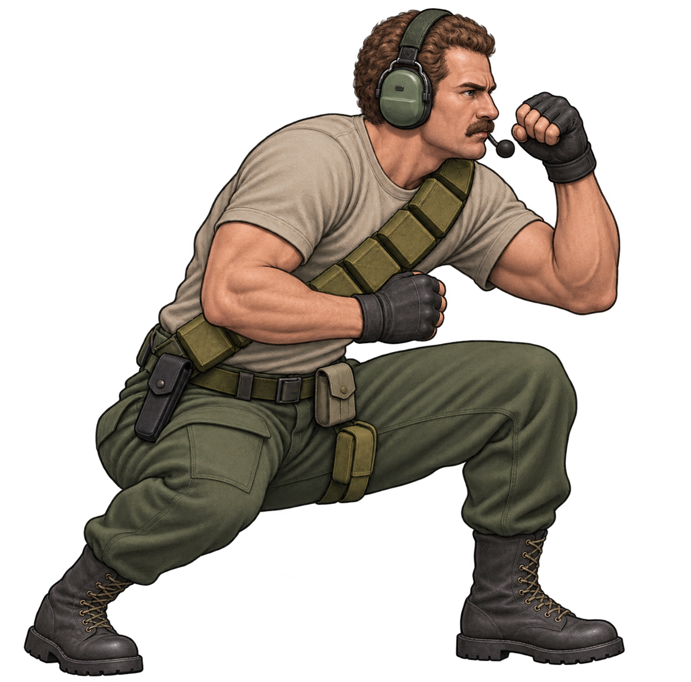
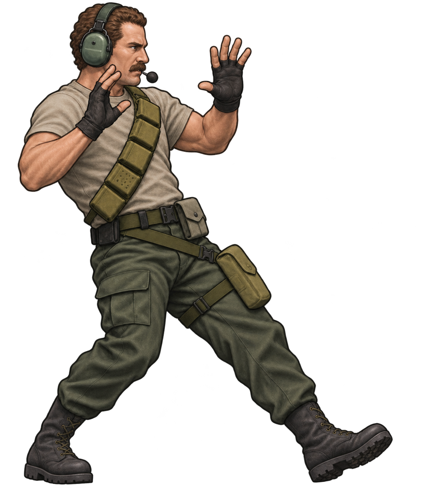
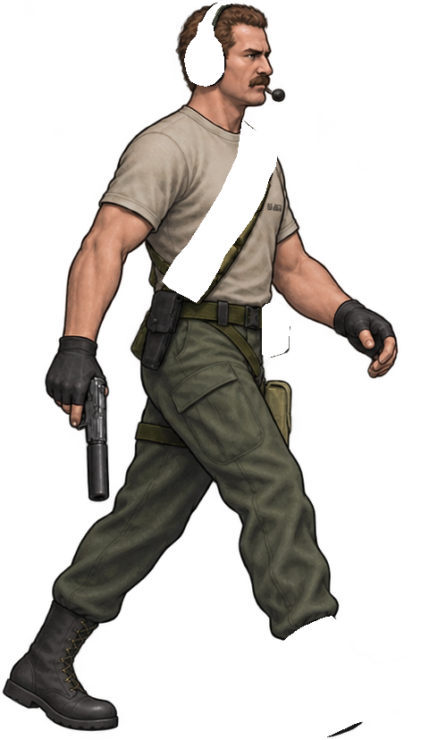
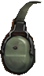
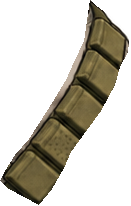
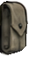
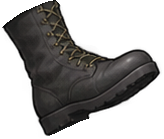
Afficher les calques de la marche
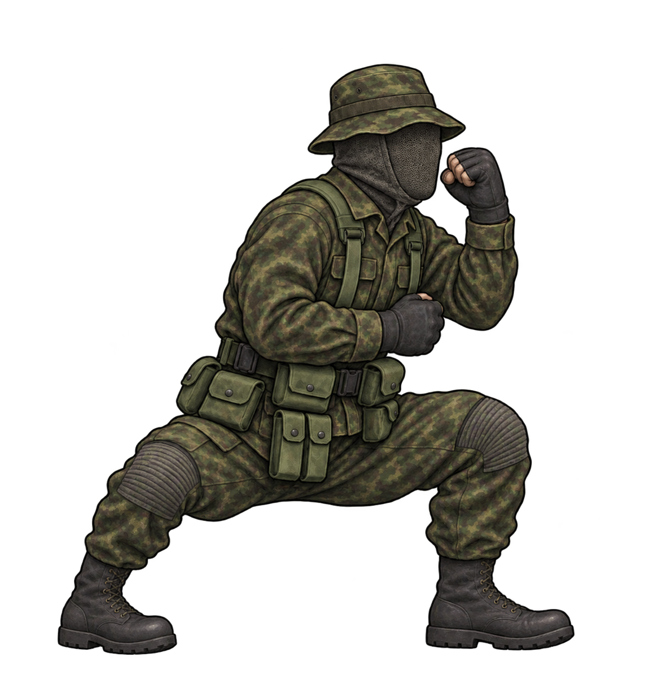
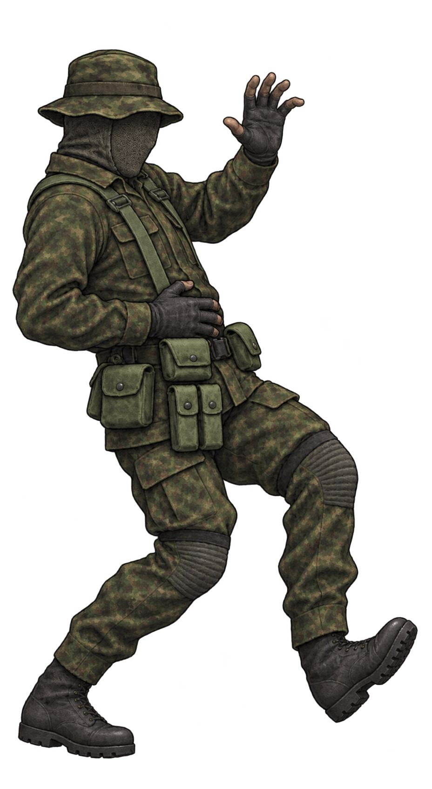
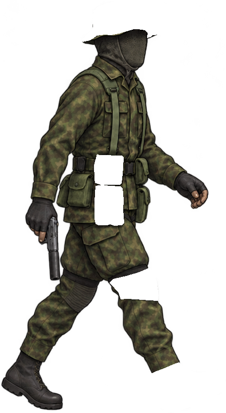
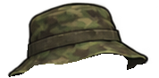
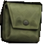
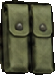
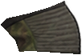
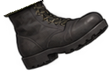